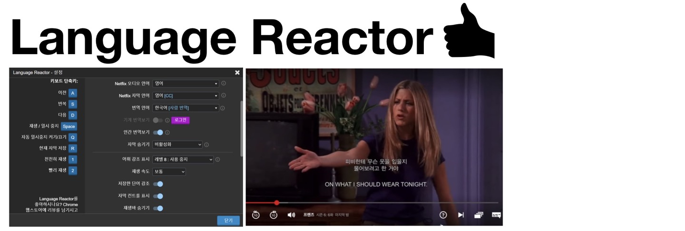
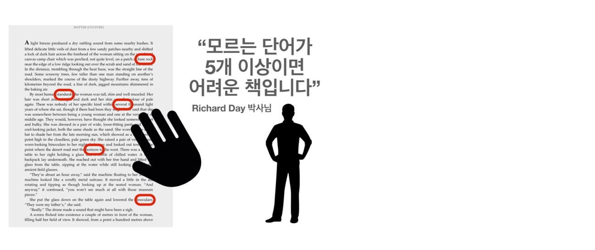

효율적으로 영어공부 하는 방법
- 넷플릭스로 영어공부 하는 방법
- 이중자막을 위한 Language Reactor 설치

-
검색창에 'Language Reactor'이라고 치면 Chrome 웹스토어에서 다운을 받을 수 있습니다.
설치를 완료한 후에 넷플릭스에 로그인을 해야 합니다. 첫 영상을 고른 후 모국어를 설정할 수 있습니다.
위 사진과 같이 Netflix 자막 언어를 영어[CC], 번역 언어를 한국어[사람번역]으로 하면 이중자막으로 편안하게 영어공부를 할 수 있습니다.
- Language Reactor은 크롬 확장프로그램이며 Chrome 웹스토어에서 다운 받을 수 있습니다.
- 예전 버전은 Language Learning with Netflix(LLN)이며 현재 Language Reactor만 다운 받을 수 있습니다.
- 크롬 브라우저에서만 사용 가능 합니다.
- 자막 없이 볼 경우에는 하단의 on/off 버튼을 이용해 자막의 유무를 설정할 수 있습니다.
- 화면을 작게해서 대사를 미리 볼 수 있는 기능과 단어의 뜻을 바로 확인할 수 있는 기능도 갖고 있습니다.
- 영어원서 고르는 방법
- 
-
영어 원서 책을 많이 샀지만 끝내지 못한 분들이 계실거라고 생각합니다.
원서책으로 재밌고 효율적으로 공부하는 방법은 자신에게 맞는 수준의 책을 찾는 것입니다.
다독학습 연구로 유명하신 Richard Day 박사님은 책과 한 손만 있으면 책을 쉽게 고를 수 있다고 말하셨습니다.
모르는 단어 또는 어려운 단어가 5개 이하인 책을 고르는 것이 재밌고 효율적으로 영어 공부할 수 있는 방법이며,
이 방법을 통해 영어 원서 읽기를 포기하지 않으셨으면 좋겠습니다!
- "Intermediate learners might use the rule of hand
-- no more than five difficult words per page." by Richard Day